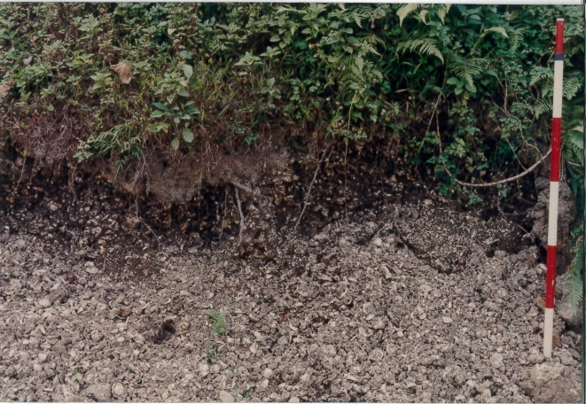
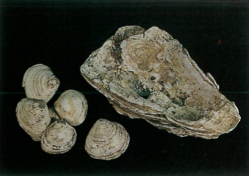

Explore the story
The shell midden is an archaeological phenomenon created by accumulation of shells after consumption. Many shell middens have been found around the little mount of Yuanshan, indicating long-term settlement and a diet that included shell creatures in prehistoric times.
The majority of shells found here belong to clams (Cobicula maxima Prime) that lived in fresh or brackish water. This means that rivers and brackish lakes were in close proximity to Yuanshan. These shells are well preserved as the calcium carbonate in the shells created a calcium-rich environment that resisted against weathering and erosion.
The shell middens at Yuanshan also contained other waste, such as broken pottery, stone tools for hunting and farming, and animal bones after consumption. This evidence helps us piece together the picture of daily lives in prehistoric times.


The shell midden and shells found at the yuanshan site in 1992 - the midden was composed mainly of clams (Cobicula maxima Prime).